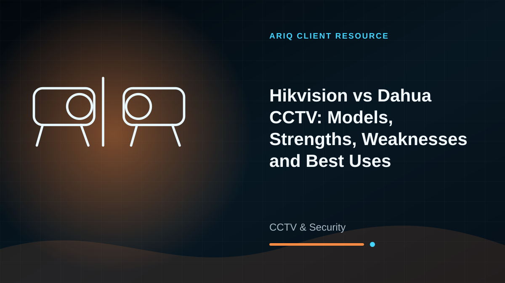
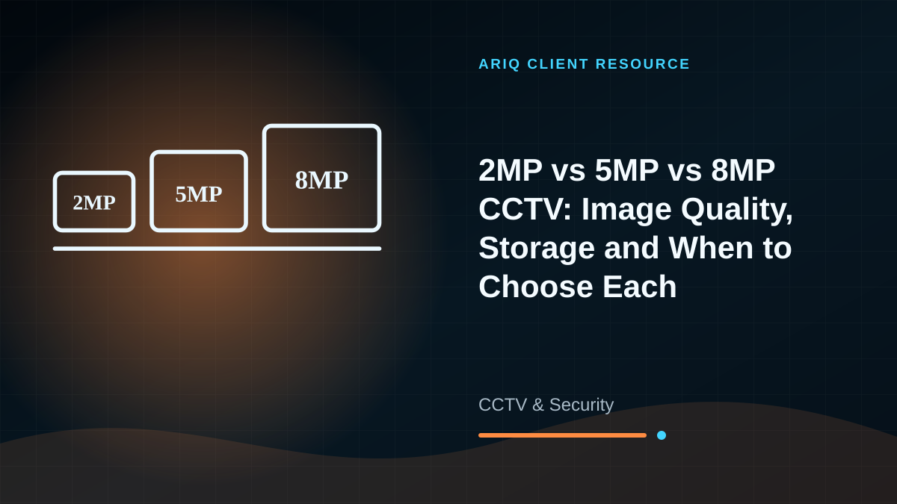

CCTV Installation
Camera positioning, cable routing, DVR/NVR setup, storage configuration, and complete system testing.
Protect What Matters
Professional CCTV and surveillance solutions for homes, shops, offices, schools, warehouses, and other properties across Zimbabwe.
What We Provide
From consultation to delivery and after-sales support, AriQ keeps the process clear and practical.
Camera positioning, cable routing, DVR/NVR setup, storage configuration, and complete system testing.
Secure mobile and computer viewing so authorised users can check cameras away from the property.
Add cameras, improve image quality, increase storage, replace damaged equipment, and modernise older systems.
Fault diagnosis, camera cleaning, cable repairs, recording checks, password recovery guidance, and ongoing support.
Our Process
We review entrances, blind spots, lighting, distances, recording needs, and remote viewing requirements.
You receive a suitable camera count, equipment specification, installation plan, and quotation.
We install and test the system, configure viewing access, and show you how to use it.
Client Resources
Compare options, understand the trade-offs and prepare the right questions before requesting a quotation.

CCTV & Security
Compare entry-level IR cameras, 5MP full-colour systems, AI detection and active-deterrence options from Hikvision and Dahua.
Read detailed guide →
CCTV & Security
Higher megapixels can show more detail, but lens choice, lighting, storage and camera position decide whether the upgrade is worth the cost.
Read detailed guide →Talk To AriQ
Send us your requirements and location. We will recommend the most suitable solution and provide a clear quotation.